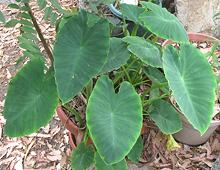
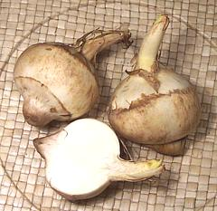
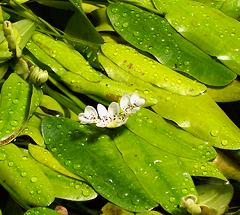
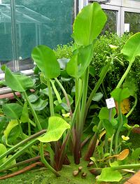
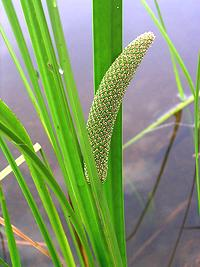

SAFARI
Users
Order Alismatales - Water Plantains
Alismatales consisted of a number of obscure aquatic and marine plants of minor culinary interest - until APG II found a large and important family of swamp plants, the Arums, belonged to this order.
Arums [family Araceae]
This family of plants is of critical importance as food crops in tropical
regions, growing well where other starchy food crops cannot thrive.
Leaves of some are also cooked and eaten. Interestingly the Arums produce
both the largest and the smallest flowers known in nature. One tiny free
floating aquatic variety, long known for cleaning up fish ponds, is now
being developed as a nutritious ingredient for food processing. Due to
their importance as both decoratives and food plants, the
Arum Family has its own page.
Arrowhead [Kuwai (Japan), Ci gu (China); Sagittaria sagittifolia | Duck Potato, Indian Potato, Broadleaf Arrowhead, Wapato: Sagittaria latifolia | Sagittaria trifolia' all of family Alismataceae] S. sagittifolia is native through most of Europe and Asia, from Siberia to Turkey and on to Australia. The foliage of this plant is shown in the photo at the top of this page. The tubers are seasonably available in Asian markets here in Los Angeles. They can be eaten raw or cooked, including fried as chips. They are bland and starchy, much like potato, but when cooked are somewhat crunchier. The photo specimens were 2-1/4 inches diameter and weighed 3 ounces each. They do not keep well even refrigerated, so should be cooked within a few days of purchase. Boiled tubers figure prominently in both Chinese and Japanese New Years celebrations. S. latifolia, native to the Americas, is not sold commercially. It was at one time eaten by the North American Indians but today is eaten mainly by beavers, porcupines and muskrats. It is native from southern Canada all the way down to northern South America, but has become naturalized in much of Europe.
S. trifolia, native from Ukraine to Southeast Asia, including
the Philippines, is cultivated in parts of Asia for its nutritious
tubers. Species not listed here may also be eaten in the regions where
they grow.
Cape Pond Weed [Waterblommetjie (South Africa), Water Hawthorn, Vleikos: Aponogeton distachyos; of family Aponogetonaceae]
This pond plant, native to South Africa, is now cultivated there
and in some other suitable regions. In South Africa, its flower buds have
been valued as a flavoring since arrival of the first Dutch settlers.
It is most used in a mutton stew called Waterblommetjie Bredie. This
plant grows from a tuberous rhizome which goes dormant when the ponds
(Vleis) dry up, and sprout new foliage when the rains return. Outside
South Africa it is often used for pond landscaping, from which it has
escaped and reportedly become naturalized in parts of southwestern
California.
Photo by Cillas distributed under license Creative Commons
Attribution-ShareAlike v3.0 Unported.
Yellow Burr Head [Yellow Sawah Lettuce, Yellow Velvetleaf; Gènjèr (indonesia); Phak Khan Chong (Laos); Phak Khan Chong (Thai); Cebolla de Chucho (Philippine); Kèo nèo, Cù nèo (Vietnam); Limnocharis flava; all of Family Limnocharis]
Native to the tropical Americas, including the Caribbean, this plant has
become naturalized in wet environments through South and Southeast Asia,
including southern China. Despite it's America origin, the leaves and
stems are widely eaten in Asia in soups, curries, salads and stir fries.
In Isan (eastern Thailand) it is often eaten raw with sour chili sauce.
In some regions it is considered food for the poor due to its modest
flavor.
Photo by Michael Wolf distributed under license Creative
Commons
Attribution-ShareAlike v3.0 Unported.
|
Order Acorales
This order, consisting of a single family, containing a single genus, with only two species, is the oldest surviving monocot order.
Sweet Flag [Acorus calamus (Eurasian species) Acorus calamus var americanus - Acorus gramineus (Asian); of Family Acoraceae] Once placed among the Arums, APG II has placed Acorus not only in its own family, but in a separate order, as the last known representative of the oldest line of monocots. As a sister group to all other monocots, it may be a precursor to the Arums, or even to all the Alismatales. Not all botanists accept this placement. Fossils have been found from the Eocene, about 50 million years ago. The grass-like leaves of this bog plant are common in the northeast U.S. and Asia. The rhizomes (underground stems) were eaten by Native Americans in times past but it is no longer a significant food plant. European settlers planted the Eurasian variety, although the American variety (identical to a Siberian variety) was already common in North America. Sweet Flag was long used as a food flavoring and in perfumes, but the
FDA banned all varieties from food in 1968 when one variety in India was
found to contain a carcinogen, even though the varieties found here don't
contain that substance. In areas where Sweet Flag grows, leaves are
sometimes placed in jars of sugar as a flavoring substitute for vanilla
bean. Leaves are used for their fragrance and to repel weevils from stored
grains. The root is used medicinally.
Photo by Jack Greenlee, U.S. Forest Service =
Public Domain.
|
©Andrew Grygus - agryg@clovegaden.com - Photos on this page not otherwise credited are © cg1 - Linking to and non-commercial use of this page permitted